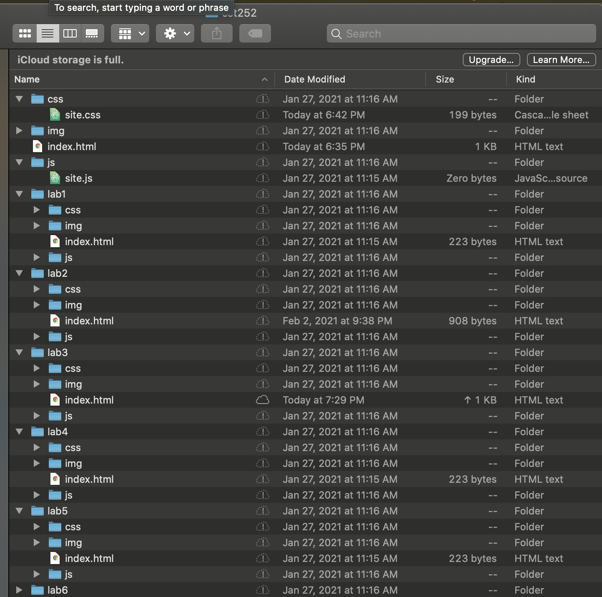

<!DOCTYPE html>
<html>
<head>
	<title>Lab 3: File Transfer</title>
	<link rel="stylesheet" type="text/css" href="../css/site.css">
	<link rel="stylesheet" type="text/css" href="css/lab.css">
</head>
<body>
</body>
</html>
</head>

		<div id="content">
 				<h1>Lab 3: File Transfer </h1>
					
			<h2>Big Idea</h2>
				<p>The idea of this lab was to create a local file <br>
			structure on my computer for my cst252 folder, <br>
			add labs, css, and image folders, and lastly add index.html
			files to each lab folder.</p>

			<h2>Challenges</h2>
				<p> Some challenges that we faced were just getting used to creating the
					forms and remembering the order of placement of the form structure. </p>

				<h2>Results</h2>
				<p> The results were very successfully, everything worked as plan! As seen in
					the document presented!
					<br>
					<br>
					<br>
					<a href="../index.html">Let's go home, click me.</a>
